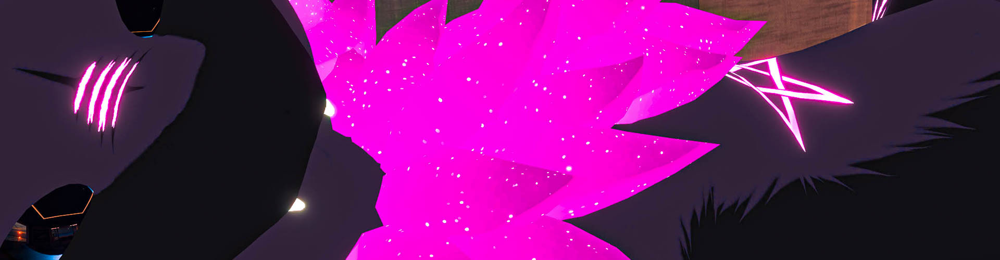
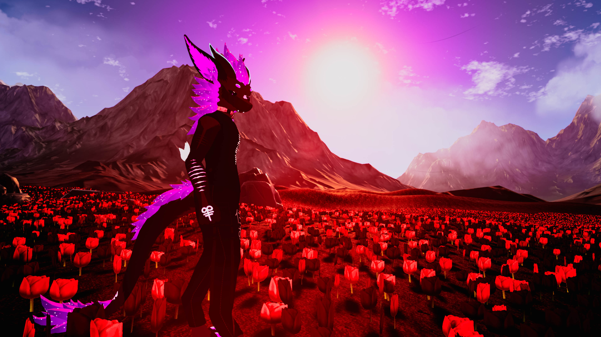
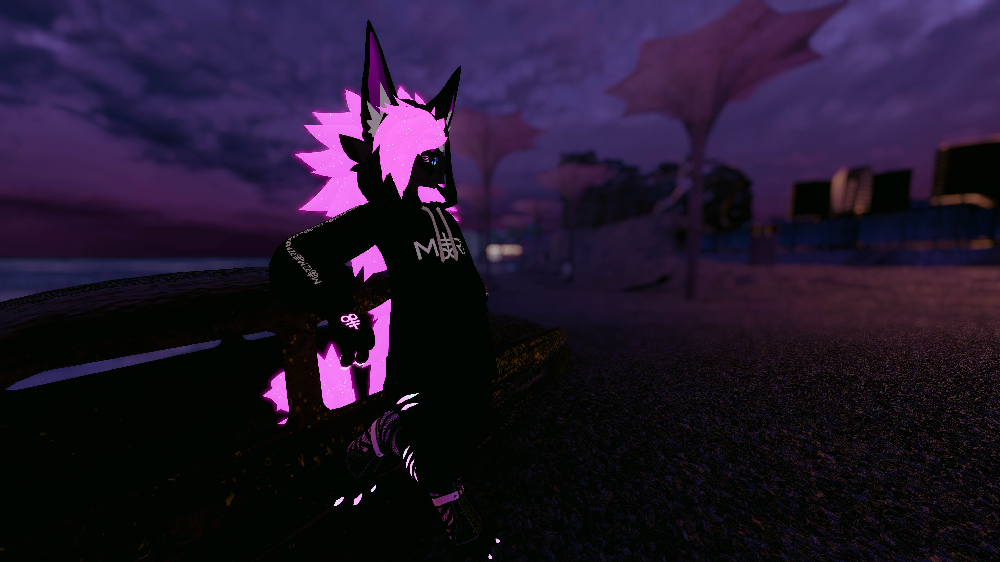

The Tale of a Cruel World

I’m Marz, a 22-year-old tech enthusiast, gamer, and Twitch streamer based in Spain.
I'm passionate about gaming, software developing and community-driven projects.
I stream on Twitch.
My interests span from VR and gaming to modding. I also enjoy working with backend tools and infrastructure. This site serves as a hub for my work, Socials, projects, and creative experiments.
Live projects:
- VRChat community gallery linked to my discord server

Meet Plasma
Plasma is my fursona. He's the representation of who I am, with a lot of symbolysm tied into the design.
He is my energy, my struggles, my pain, my creativity, he is my history.
Plasma is the result of two very different minds melded into one. Of past traumas and experiences that shaped who I am today.
A story of pain and desperation, finished with a tame and calm end, though not a good one.
For an actual ref, go here and here.
Symbolysm
There are three main design points in Plasma. The Pentagram, the scars and the Leviathan crosses.
- The Pentagram is a strong symbol with various meaning through history. It represents my love for for the occult and my firm beliefs.
It is also important that it's not a pentacle nor an inverted pentagram. Having the star point up represents mind over matter to me. - The scars are a representation of my past traumas and struggles. They are a reminder of what I've been through and how I've overcome it.
They will never fully heal, for the past can not be changed, but they are a part of who I am today. - The Leviathan crosses are by far the most important design element. The infinity sign at the bottom represents the eternal nature of reality
while the double cross at the top represents balance and duality. The two sides of who I used to be.
The association with Leviathan makes it a symbol of depth and surfacing, meaning the many challenges I've overcome.
Leviathan itself is also a symbol of chaos and power, two ideals I strive to embody through my own path.
One on each hand represents Exxe on the left and Lune on the right. Whose names and memories I will never forget. May you always guide me like you once did.

